二、醣類（碳水化合物 Carbohydrates）概論
1. 組成元素與通式：由 C、H、O 組成，可用簡式 Cn(H2O)m 表示。多數單醣與二醣的 H:O 原子比為 2 : 1（去氧核糖 C5H10O4 為例外）。
2. 分類階元：依分子大小與水解單位分為：單醣、雙醣、寡醣、多醣四大類。
三、單醣（Monosaccharides，n = 3～6）核心結構與生理角色
| 類別 |
代表物質名稱 |
分子式與環狀/鏈狀特徵 |
關鍵生理功能與大考考點 |
三碳醣
(C3) |
甘油醛 (PGAL) |
C3H6O3，直鏈狀醛醣 |
光合作用固碳反應（卡爾文循環）形成之直接產物；呼吸作用糖解作用之中間產物。 |
五碳醣
(C5) |
核糖 (Ribose) |
C5H10O5，五角環狀 |
組成 RNA、ATP、NAD+、NADP+ 之核苷酸五碳醣成分。 |
| 去氧核糖 (Deoxyribose) |
C5H10O4，五角環狀 |
2號碳 (2'-C) 上少一個氧原子（-H 代替 -OH），故 H:O ≠ 2:1；組成 DNA。 |
六碳醣
(C6) |
葡萄糖 (Glucose) |
C6H12O6，六角環狀 |
最普遍單醣，細胞呼吸主要燃料（血糖即指血液葡萄糖），組成麥芽糖/澱粉/纖維素。 |
| 半乳糖 (Galactose) |
C6H12O6，六角環狀 |
4號碳 (-OH) 方向與葡萄糖相反；哺乳動物乳汁成分，合成乳糖與腦苷脂。 |
| 果糖 (Fructose) |
C6H12O6，五角環狀酮醣 |
天然存在於蜂蜜與甜果，甜度最高之天然醣類；三者互為同分異構物！ |
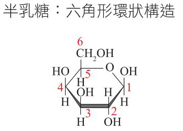
▲ 半乳糖 (4號碳異構)
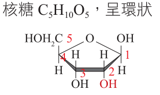
▲ 核糖 (2'-OH)
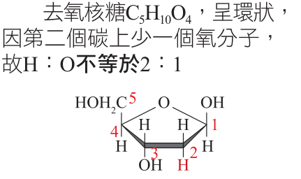
▲ 去氧核糖 (2'-H)
四、雙醣（Disaccharides，C12H22O11）合成與功能
• 脫水縮合反應式：單醣 (C6H12O6) ＋ 單醣 (C6H12O6) ➔ 雙醣 (C12H22O11) ＋ H2O，中間藉由「醣苷鍵 (Glycosidic linkage)」共價連結。
| 雙醣名稱 |
單醣組成分子 |
主要天然來源與存在形式 |
重要生理角色與生活科學 |
蔗糖
(Sucrose) |
葡萄糖 ＋ 果糖 |
甘蔗、甜菜根、日常食用二號砂糖。 |
植物韌皮部篩管運輸之主要形式（非還原糖，化學性質極為穩定）。 |
麥芽糖
(Maltose) |
葡萄糖 ＋ 葡萄糖 |
萌發的穀物種子、澱粉經澱粉酶水解之中間產物。 |
種子萌發時為胚提供能量；麥芽糖為還原糖。 |
乳糖
(Lactose) |
葡萄糖 ＋ 半乳糖 |
哺乳動物乳汁中最豐富之醣類。 |
嬰幼兒腦部神經鞘磷脂發育之關鍵營養原料。 |
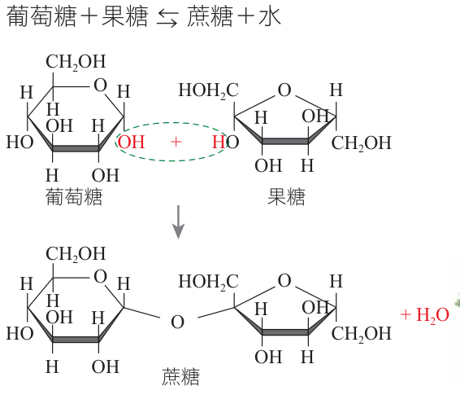
▲ 蔗糖合成 (葡+果)
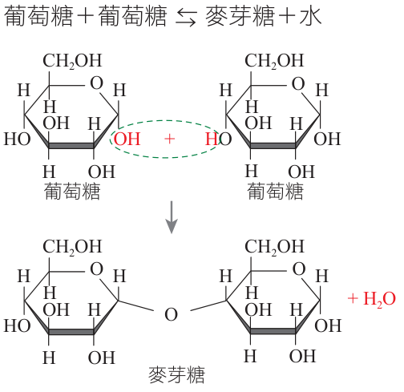
▲ 麥芽糖合成 (葡+葡)
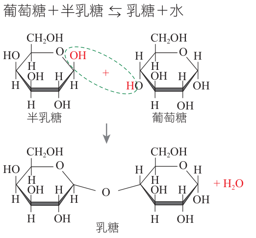
▲ 乳糖合成 (葡+半乳)
五、寡醣（Oligosaccharides，3～10 個單醣）與細胞膜辨識
1. 醣蛋白與細胞辨識：寡醣鏈多與細胞膜外側蛋白質或脂質共價結合（形成醣蛋白 Glycoprotein 或醣脂），扮演細胞「身份分子身分證」。例如：人類紅血球表面之 A、B 抗原即為特定分支寡醣鏈，決定了 ABO 血型！
2. 果寡醣益生元：難以被人體消化酵素分解，熱量極低，可作為腸道益菌（雙歧桿菌）養分，促進腸胃健康蠕動。
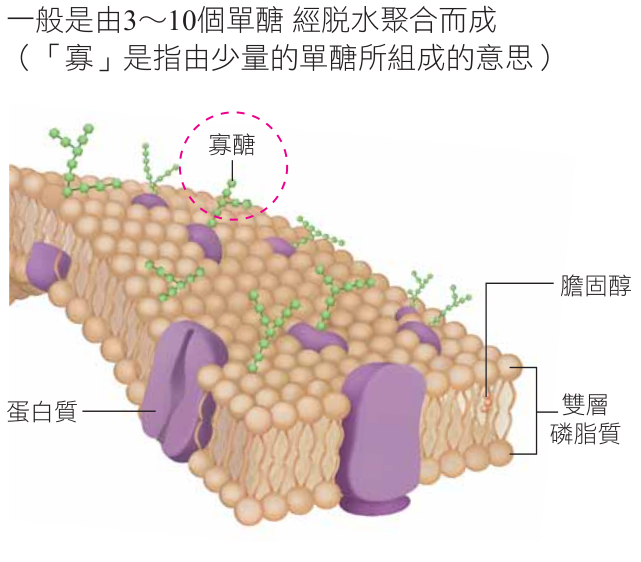
▲ 寡醣鏈與紅血球 ABO 抗原（點擊放大）
六、多醣（Polysaccharides，數百至數千單醣聚合）深度比較
| 多醣分類 |
多醣名稱 |
單體與鍵結方向 |
鏈狀立體排列與分支特點 |
主要生物功能與分佈位置 |
儲存性
多醣 |
澱粉
(Starch) |
α-葡萄糖
(OH 在同側) |
捲曲成螺旋狀；分為直鏈澱粉（無分支）與支鏈澱粉（具分支）。 |
植物儲能主要形式（根、莖、種子中之澱粉粒）。可被唾液與胰澱粉酶水解為麥芽糖。 |
肝醣
(Glycogen) |
α-葡萄糖
(OH 在同側) |
高度分支捲曲結構（分支密度高於支鏈澱粉）。 |
動物儲能主要形式（主要儲存在肝臟與骨骼肌），又稱「動物澱粉」。 |
結構性
多醣 |
纖維素
(Cellulose) |
β-葡萄糖
(OH 在異側) |
伸展呈平行的不分支直鏈，鏈與鏈間藉密集氫鍵交聯成強韌微纖維。 |
組成植物細胞壁主骨架；地球上含量最豐富之有機物！人體缺乏分解 β-醣苷鍵之酵素，故無法消化。 |
幾丁質
(Chitin) |
N-乙醯葡萄糖胺 |
類似纖維素之平行鏈狀排列，含氮元素 (N)。 |
節肢動物外骨骼（昆蟲、甲殼類）與真菌細胞壁成分；醫學上可製成可吸收之外科手術縫合線。 |
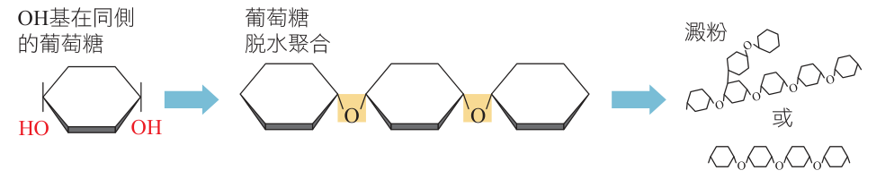
▲ 澱粉結構 (螺旋分支)
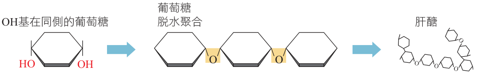
▲ 肝醣結構 (高度分支)
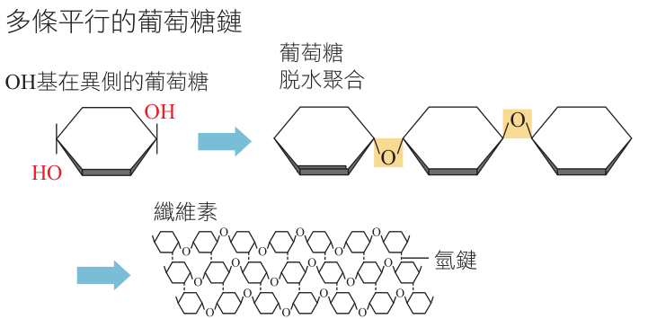
▲ 纖維素結構 (平行微纖維)
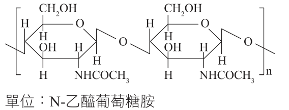
▲ 幾丁質結構 (含N基團)
💡 為什麼人能消化澱粉卻不能消化纖維素？澱粉為 α-1,4 醣苷鍵（OH 同側），纖維素為 β-1,4 醣苷鍵（葡萄糖單元上下交替翻轉）。人體澱粉酶的受質結合位「形狀立體特異性」僅能契合 α-鍵，無法與纖維素結合水解！
一、蛋白質的構成單位 —— 胺基酸（Amino Acids）
1. 基本通式：以中央 α-碳原子 (Cα) 為核心，共價鍵結四個基團：
① 胺基 (—NH2，具弱鹼性，可結合 H+)
② 羧基 (—COOH，具弱酸性，可解離出 H+)
③ 氫原子 (—H)
④ 變異側鏈 (—R 基團)：決定該胺基酸的獨特性質！
2. 側鏈的多樣性：生物體常見胺基酸共有 20 種，依 —R 基團之化學特徵可區分為：
• 非極性疏水性：如白胺酸 (Leu)、纈胺酸 (Val)。
• 極性不帶電親水性：如絲胺酸 (Ser)、半胱胺酸 (Cys，含 -SH 硫氫基可形成雙硫鍵)。
• 帶負電酸性：如麩胺酸 (Glu)、天門冬胺酸 (Asp)。
• 帶正電鹼性：如離胺酸 (Lys)、精胺酸 (Arg)。
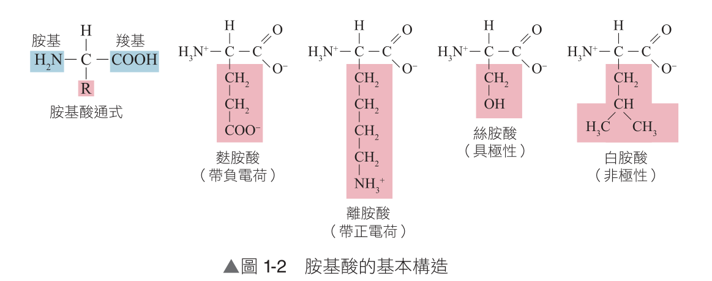
▲ 圖 1-2 胺基酸基本構造與側鏈分類（點擊放大）
二、肽鍵（Peptide bond）形成機制與縮合反應
當核糖體進行蛋白質轉譯時，前一個胺基酸的羧基 (—COOH) 與後一個胺基酸的胺基 (—NH2) 進行脫水作用，脫去一分子水 (H2O)，形成一個強韌的醯胺鍵共價連結，稱為肽鍵 (—CO—NH—)。
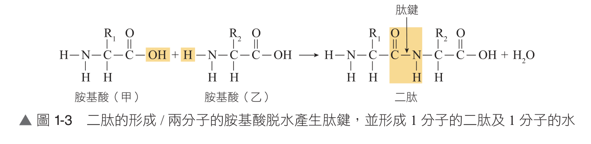
▲ 圖 1-3 二肽的形成（兩分子胺基酸脫水產生一個肽鍵與一分子水）
五、脂質（Lipids）通性與三酸甘油酯（中性脂肪）
1. 通性：由 C、H、O 構成（部分含 P）。不具極性、不溶於水，可溶於非極性有機溶劑（如乙醚、氯仿）。含大量碳氫鍵 (C-H)，完全氧化時每公克可釋放 9 kcal 能量（為醣類或蛋白質 4 kcal 的兩倍以上！）。
2. 常見脂質四大類別：中性脂肪（三酸甘油酯）、磷脂質、固醇類、蠟。
六、中性脂肪（Triglycerides）合成與脂肪酸比較
• 合成反應：由 1 分子甘油（丙三醇，三碳含三個 -OH）與 3 分子脂肪酸進行酯化脫水縮合，形成三個「酯鍵 (Ester bond)」並脫去 3 分子水。
| 種類特徵 |
飽和脂肪酸 (Saturated) |
順式不飽和脂肪酸 (Cis-unsaturated) |
反式脂肪酸 (Trans-fat) |
| 碳碳共價鍵 |
碳原子間全部為單鍵 (C—C)，接滿氫原子。 |
碳原子間具有雙鍵 (C=C)，雙鍵旁氫原子位於同側。 |
氫化加工產生，雙鍵旁氫原子位於異側。 |
| 空間構型與熔點 |
直鏈狀伸展，分子排列緊密，熔點高，室溫下呈固態（脂肪）。 |
雙鍵處分子產生明顯彎曲 (Kink)，排列疏鬆，室溫呈液態（油）。 |
呈筆直假直鏈構型，排列緊密，室溫常呈固態或半固態。 |
| 天然來源與影響 |
豬油、牛油、椰子油；過量攝取易升高心血管風險。 |
大豆油、橄欖油、深海魚油；有助於維持心血管健康。 |
人造奶油、高溫油炸點心；不易被人體代謝，極易沉積引發粥狀硬化。 |
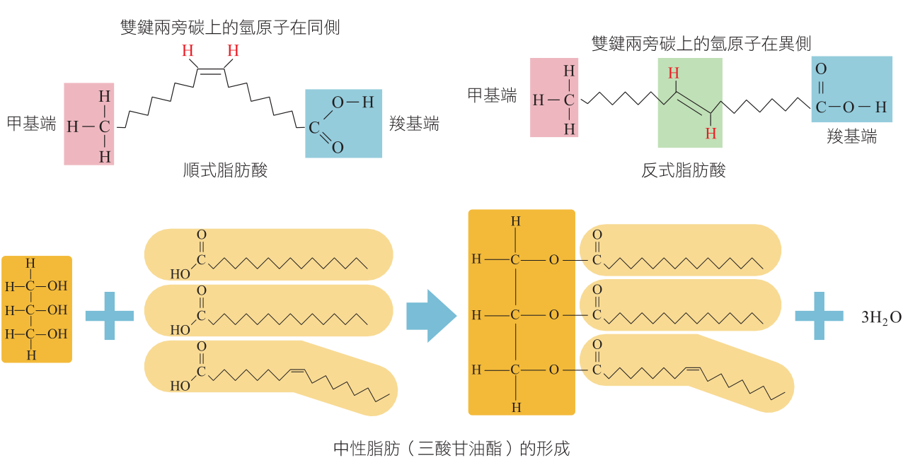
▲ 三酸甘油酯的酯化形成反應（1甘油＋3脂肪酸 ➔ 1三酸甘油酯＋3H2O）
七、磷脂質（Phospholipids）—— 細胞膜的基石
1. 分子構造組成：由 1 分子甘油 結合 1 分子帶負電磷酸基（親水端）與 2 分子長鏈脂肪酸（疏水端）。
2. 兩性分子特質 (Amphipathic)：
• 親水性頭部 (Hydrophilic head)：極性磷酸基與膽鹼基團，極易與水分子形成氫鍵相吸。
• 疏水性尾部 (Hydrophobic tails)：非極性長碳氫鏈脂肪酸，排斥水分子而向內聚集。
3. 自發形成磷脂雙層 (Lipid bilayer)：在水溶液中，親水頭朝向外側與內側水相，疏水尾朝向雙層中央，形成厚度約 7～10 nm 的連續膜狀骨架，構成所有生物膜（細胞膜、胞器膜）之主體！
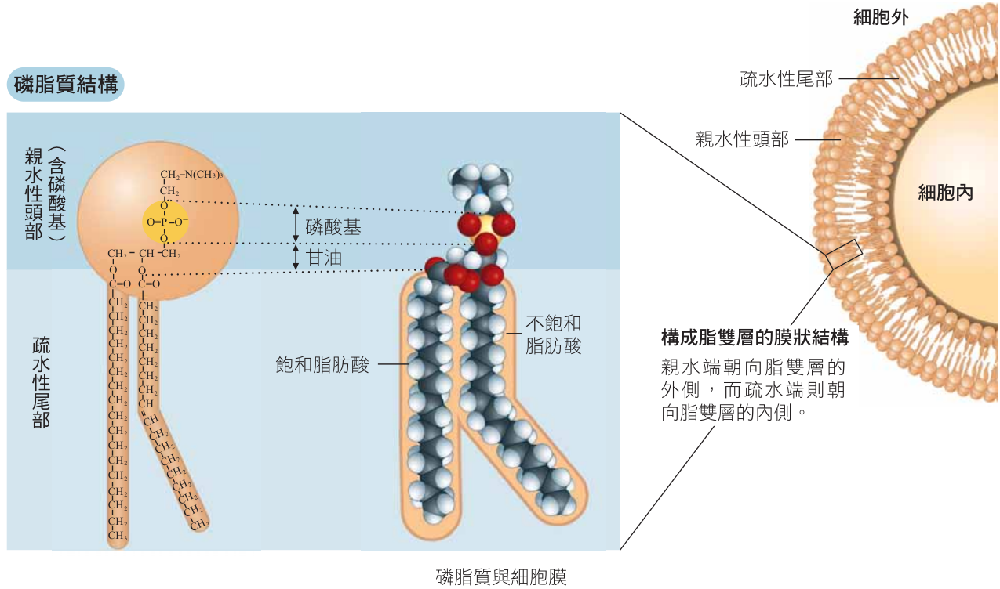
▲ 圖 1-4 磷脂質與細胞膜脂雙層（點擊放大）
八、固醇類（Steroids）與蠟（Waxes）
| 脂質種類 |
化學結構特徵 |
生物生理功能與重要實例 |
膽固醇
(Cholesterol) |
由四個相連的碳環 (4-ring) 構成，不含甘油與脂肪酸。 |
動物細胞膜重要成分，維持膜流動性（高溫降流動、低溫防凝固）；為合成性激素之原料。 |
類固醇激素
(Steroid hormones) |
以膽固醇為母核衍生而來的脂溶性化學訊息分子。 |
• 性激素：雄性素（睪固酮）、雌性素（雌二醇）、黃體素。
• 腎上腺皮質素：醛固酮、皮質醇。 |
| 蠟 (Waxes) |
長鏈脂肪酸與長鏈單元醇形成的酯化物。 |
強疏水固態脂質；形成植物葉表皮與果皮角質層防水分散失；蜜蜂築造蜂巢。 |
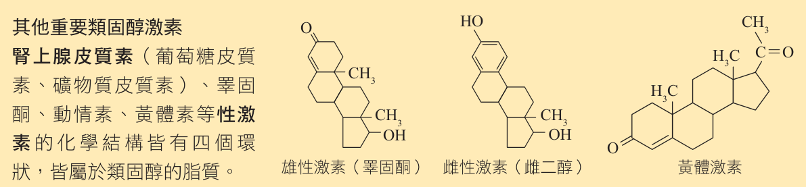
▲ 類固醇四環核心與代表性激素
九、核酸（Nucleic acids）—— 遺傳密碼的載體
1. 發現簡史：1869 年瑞士科學家米歇爾 (Miescher) 從外科繃帶膿液白血球的細胞核中分離出富含磷的酸性物質，定名為「核素 (Nuclein)」，後正名為核酸。
2. 構成單體 —— 核苷酸 (Nucleotide)：由 1分子磷酸基 ＋ 1分子五碳醣 ＋ 1分子含氮鹼基 組成。
十、DNA 與 RNA 兩大核酸全方位深度對照表
| 比較項目 |
去氧核糖核酸 (DNA) |
核糖核酸 (RNA) |
| 主要分佈位置 |
主要位於真核細胞核內（染色質），粒線體與葉綠體亦含微量。 |
細胞質、核糖體、核仁；亦可暫存於細胞核內（剛轉錄完成）。 |
| 五碳醣種類 |
去氧核糖 (C5H10O4，2'-C 接 -H) |
核糖 (C5H10O5，2'-C 接 -OH) |
| 含氮鹼基種類 |
A (腺嘌呤)、T (胸腺嘧啶)、C (胞嘧啶)、G (鳥糞嘌呤) |
A (腺嘌呤)、U (尿嘧啶)、C (胞嘧啶)、G (鳥糞嘌呤) |
| 常見核苷酸單體 |
dAMP、dTMP、dCMP、dGMP（共 4 種去氧核糖核苷酸） |
AMP、UMP、CMP、GMP（共 4 種核糖核苷酸） |
| 立體空間結構 |
多為雙股反向平行雙螺旋 (Double helix)，藉由鹼基間氫鍵維持配對。 |
多為單股分子 (Single strand)，局部可自我摺疊（如 tRNA 苜蓿葉型）。 |
| 核心生理功能 |
儲存並傳遞遺傳指令的總資料庫。 |
傳遞 DNA 遺傳密碼並協助合成蛋白質（mRNA、tRNA、rRNA）；部分具催化活性（核酶 Ribozyme）。 |
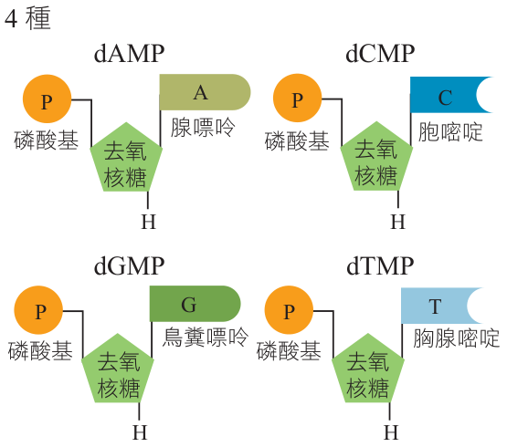
▲ DNA 的四種去氧核苷酸單體
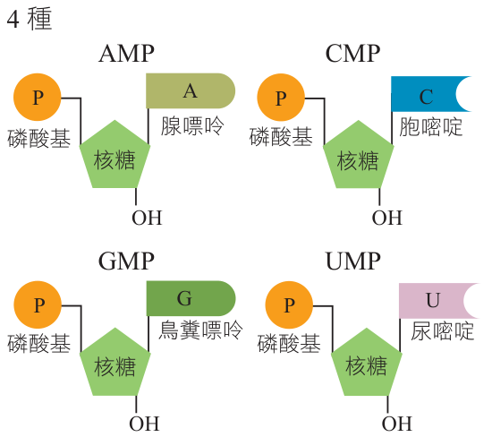
▲ RNA 的四種核苷酸單體（點擊放大）